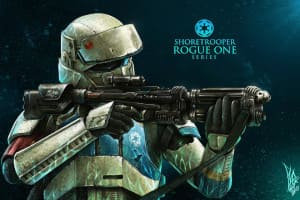
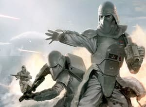
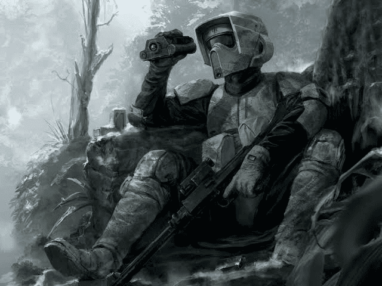

En el apogeo del Imperio, los soldados de asalto de defensa costera o "shoretroopers" patrullaban las playas y los búnkeres del cuartel general militar imperial en Scarif. Ahora, con el Imperio en decadencia, se ven asignados a destinos menos gloriosos.
Star Wars
Stormtrooper Corps

ShoreTroopers

Snowtroopers
Los soldados de las nieves (snowtroopers) son soldados de asalto entrenados para operar en condiciones árticas y equipados con material especializado para protegerse del frío.

Scout Troopers
Los soldados exploradores (*scout troopers*) llevaban una armadura más ligera en comparación con otros soldados de asalto, lo que les permitía moverse con mayor rapidez y facilidad en diversos entornos.